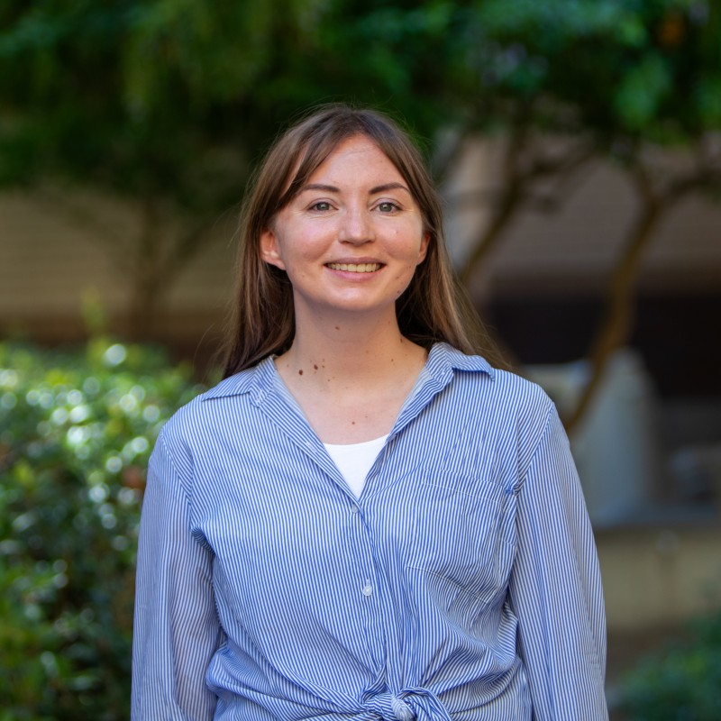
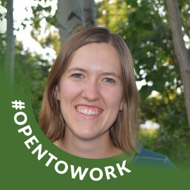
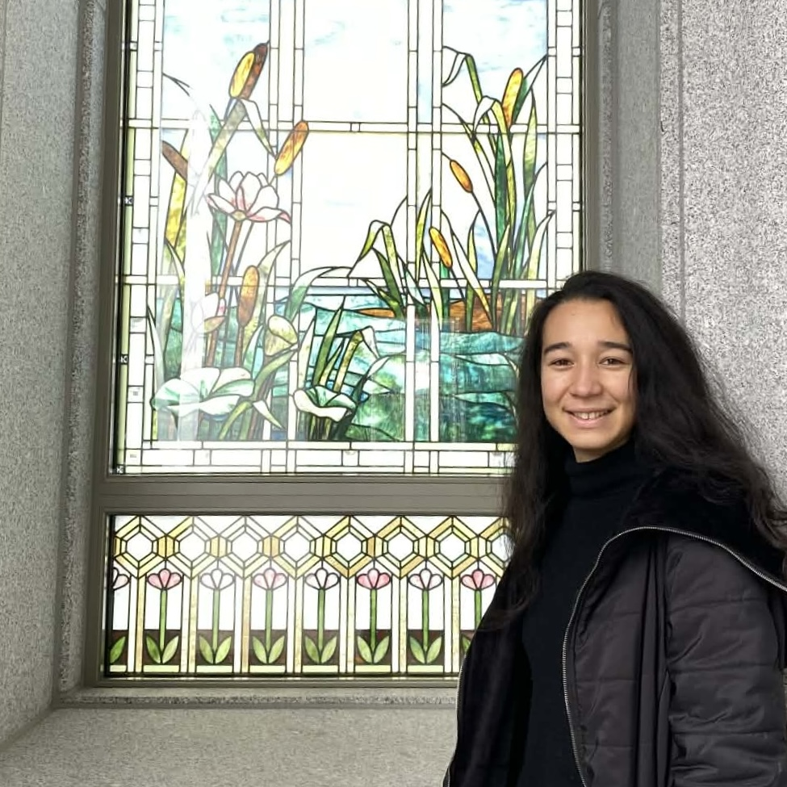
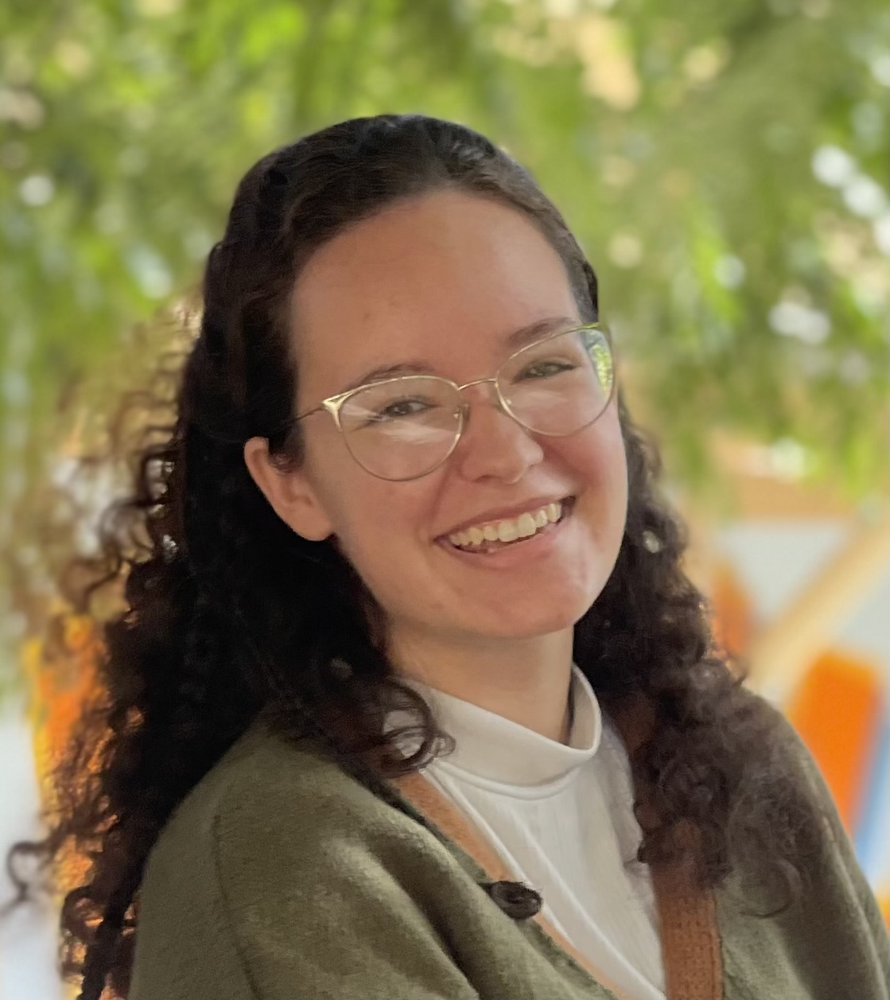
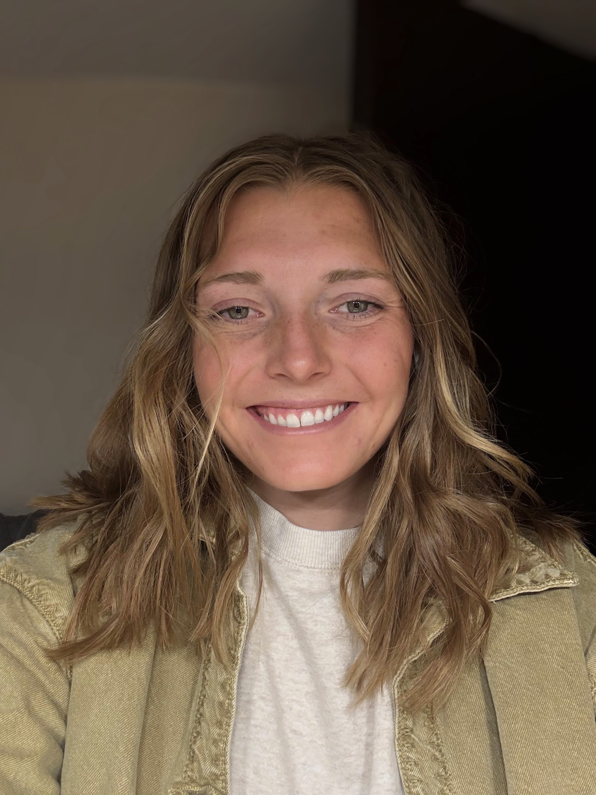
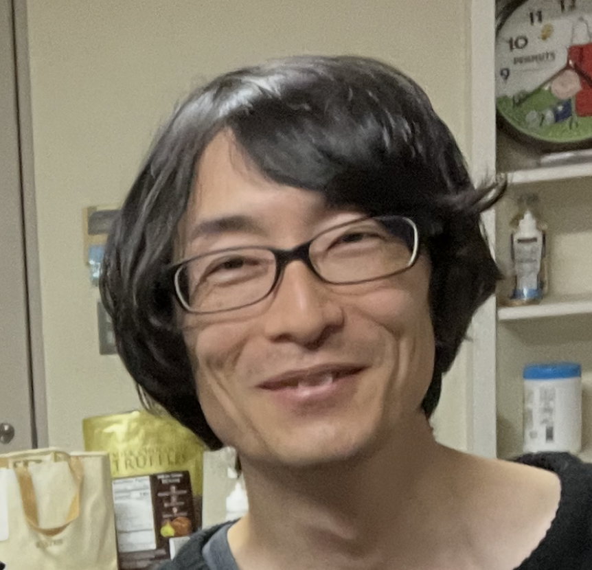
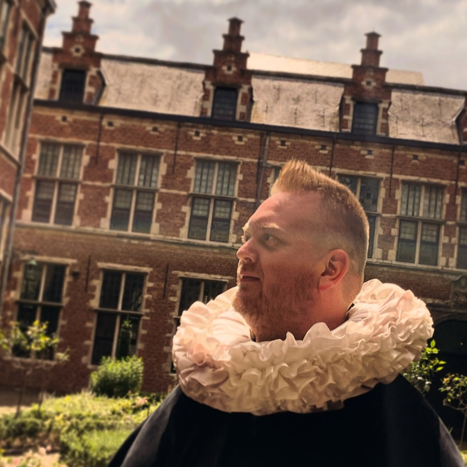
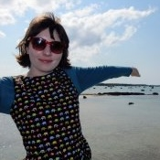

People
The lab is a mix of faculty, graduate students, undergraduates, and collaborators at BYU and at other universities. Most students are here for two or three years and leave with a poster, a presentation, a paper, or a combination.
Faculty
Dan Dewey
Specializes in econd language acquisition, social interaction, and neurolinguistics. Chair of the Department of Linguistics and Faculty Fellow at the Ballard Center for Social Impact.
Garrett Cardon
A clinically trained audiologist with a PhD in cognitive neuroscience, Garrett studies sensory processing, empathy, autism, and neural plasticity in people with hearing loss. He has also collected data with BYU’s Story Slam project, examining neural synchrony/connectivity between neurotypical and neuroatypical speakers and listeners to explore how storytelling can connect people. He mentored students taking the lab's fNIRS equipment to an autism conference in Texas.
BYU profile
Former students
where former lab members are now
Siena Christensen
Siena completed the Honors Thesis Acquisition and Memory: an fNIRS Study. She loves learning languages. She is currently focusing on the computational modeling of child language acquisition. . LinkedIn Profile

Heather Johnson
Heather is interested in the language development of bilingually exposed children. In the lab, she worked on the Social Images project, which explored Spanish learning through socially oriented images, and she supported data collection from bilingual children in the Amazon . LinkedIn Profile
Graduate students
placeholders — send names, programs, and a line eachMeg Irvine
Meg is interested in Japanese ideophones, sound symbolism, and second language acquisition. In the lab, she has worked on research exploring how second language learners acquire ideophones and interpret their multisensory meanings. Her MA thesis examines the acquisition of ideophones by non-native speakers and their understanding of the sensory information these words convey. Meg hopes to pursue a career in language education or curriculum development. SHe has collected fNIRS data in Japan using a full-head montage.

Akira Nagahama Regidor
Akira is interested in neuroscience and language learning, with a particular focus on how people learn languages through social interaction and instruction. In the lab, she has managed hyperscanning for the BYU Story Slam storytelling project, including an Autism Story Slam, and oversaw laboratory inventory and organization. Her MA thesis compares learning grammar for the purpose of teaching with learning for test performance. She hopes to pursue a career as a language educator and researcher.

Samantha Naluai
Samantha earned a BA in TESOL from BYU–Hawaii and I'm currently in the Linguistics MA program She wants to research language acquisition and the effectiveness of narrative materials (stories and characters) compared expository materials (facts, memorized lists) as well as the process of language acquisition with the goal to develop engaging and effective language learning content meant for outside of the classroom (video games, comics, book series, etc.). She aims to teach at the university level.
Yung-Wei Wang
Wei is completing Linguistics MA degree. Her research interests include computational linguistics, neurolinguistics and formal semantics. Her career goal is to become a research engineer in AI fields. In her free time, she likes building Legos and watching documentaries. Wei has conducted multiple fNIRS and EEG experiments in the Language Sciences Labs. She has mastery of cap creation, full head imaging, Aurora software, image quality checking and enhancement, and much more.
Undergraduate researchers
placeholders
Quinn Hopkinson
Quinn is a Psychology major with Creative Writing and Civic Engagement minors. She is interested in neuropsychology, neurodiversity, and child development. In the lab, she will contribute to research focused on neurodiverse populations and the application of fNIRS to child development. Quinn hopes to pursue a PhD in pediatric neuropsychology and a research career focused on improving outcomes for neurodiverse children and their families.
Hannah Rabon
Hannah is a Communications Disorders major and Arabic minor. She plans to become a Speech Pathologist, and she hope to be able to serve diverse communities, especially where English may not be a first language. Her research interests are in second-language acquisition and which methods are most effective in acquiring a second language. She has collected data as a co-author of a paper on the use of socially oriented images for Spanish language teaching. She has prepared IRB proposals, done literature reviews, supported others in their data collection, and run hyperscanning for numerous BYU Story Slam events.
Name
Project or role.
Collaborators
drawn from co-authorship — please correctJanis Nuckolls
Pastaza Kichwa and the Amazon fieldwork.

Kimi Akita
Japanese ideophones, Iconicity, Psychomimes and Interoceptive Language, Language and Gesture.

Thomas Van Hoey
Chinese ideophones and modality, Sinology and Chinese linguistics, corpus linguistics, multimodal communication.
Mat Duerden, Jamin Rowan & Camilla Hodge
Storytelling, neural coupling, and belonging.
Benjamin McMurry
Positive psychology and connection in the classroom.
R. Kirk Belnap
Stress, biofeedback, and study abroad.

Bonnnie McLean
Iconicity, Japanese ideophones, language evolution and historical linguistics, psycholinguistics and linguistic typology.
Wendy Baker-Smemoe
Pronunciation stigma, learner motivation, listening to non-native accents